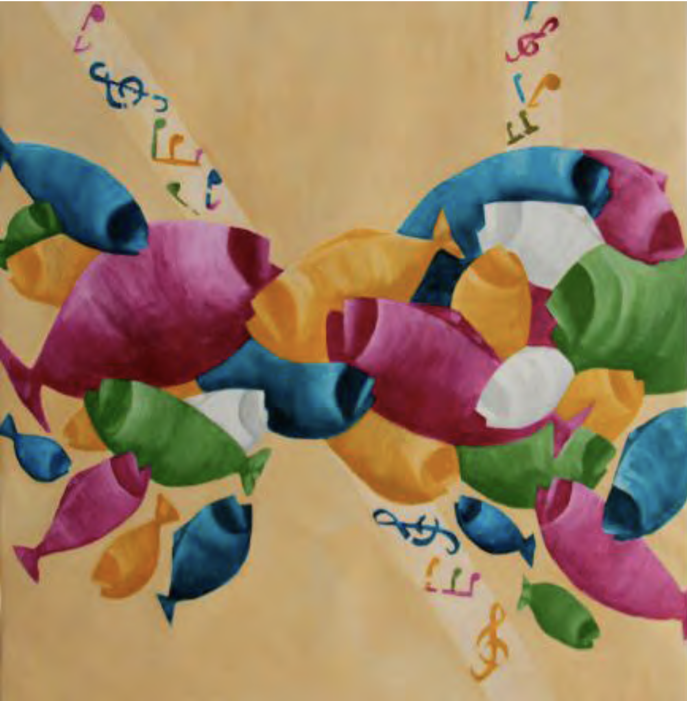

Testimonio - Voluntario
+30.000
DESAYUNOS
Brindamos desayuno diario a las 11hs en la Parroquia Nuestra Señora del Loreto junto a la plaza Las Heras
Festival Solidario "Una Navidad Para Todos" 2020
Colaboracion Grandes Artistas y participaron los jóvenes del Festival "Sal & Luz"
El Libro Digital de Arte Solidario, "2020: Covid-19 en el Arte", es parte integrante del"Programa de Artes Visuales" de la Fundación Lumen Cor, que congrega a un destacado grupo de artistas solidarios para colaborar en variados proyectos de alto impacto social.a través de este proyecto de Arte Solidario, Lumen Cor a logrado hacer visible el impacto de la pandemia en la vida de todos los argentinos."El Arte tiene esa cualidad, nos ayuda a mirarnos en el espejo, y ver lo que no se ve", destaca Luisa Méndez, Curadora del Proyecto
El carisma de Lumen Cor nace en la calle, fruto de la inspiración de su fundador, visitando a los mas necesitados. En los primeros años de Lumen Cor la "Noche De la Caridad" fue el núcleo de su labor, capacitando a sientos de voluntarios y aunando esfuerzos a nivel inter-institucional.
Fundación Lumen Cor crea un Consejo Consultivo, con representantes de decenas de "Noche De la Caridad", que recorren las calles visitando a las personas y familias en situación de extrema vulnerabilidad social.
El Consejo Lumen Cor hoy esta integrado por otras organizaciones que comparten el mismo objetivo de la "Noche de la Caridad", logrando aunar esfuerzos a nivel institucional, para una mayor sinergia y eficiencia en el trabajo en equipo.


A fines del año 2014, Lumen Cor inaugura su primera muestra de arte, bajo el lema "Unidos Por La Caridad", convocando a algunos de los más reconocidos artistas plásticos argentinos, que se dieron cita en el Centro Cultural Recoleta, donde se exhibieron las obras durante cerca de un mes, con una posterior subasta a cargo de Martín Saráchaga.
"Unidos Por La Caridad", fue una Muestra que congregó a público de todas las edades, con propuestas innovadoras, como obras interactivas, donde el público participaba de las obras, "completandolas" y crando una obra nueva.
Así, el "Árbol de la Caridad" o el rompecabezas del isologotipo de Lumen Cor, con frases de grandes pensadores de la Historia de la Humanidad, que han reflexionado sobre la caridad hacia el prójimo, convirtieron el evento en una verdadera Muestra Interactiva.
"Una Navidad para Todos"
Es el clásico evento de la Fundación Lumen Cor que se realiza todos los años, desde hace ya 20 años en la Ciudad de Buenos Aires, nucleado a familias y voluntarios de todas las edades, que recorren calles, hospitales, geriátricos, estaciones de bomberos, comisarías, hogares y centro de día, visitando a todos aquellos que están solos en Navidad.
"Que nadie esté solo en Navidad", es el lema que nos impulsa a trabajar cada Navidad, compartiendo no solo con aquellos que se encuentran en situación de calle, sino también visitando enfermos, en hospitales, niños y ancianos, en geriátricos y hogares."Una Navidad para Todos" es más que un simple evento de caridad, es un deseo, y una realidad, que hacemos posibles entre todos, gracias al esfuerzo de cientos de voluntarios y el apoyo de diversas universidadesy empresas.
El Plan de Estudios cuenta con 6 módulos diseñados para generar resultados, desde crear tu propia ONG...
Ver másTaller de pintura orientado a los Asistidos en el Posadero de la Parroquia Ntra. Sra. de Loreto...
Ver másTaller de música orientado a los Asistidos en el Posadero de la Parroquia Ntra. Sra. de Guadalupe...
Ver másFundación Lumen Cor trabaja abriendo canales de comunicación través del arte, para estimular a éstos jóvenes artistas a expresarse, por medio de las artes visuales la música y la literatura...
Ver más